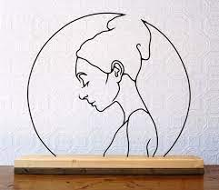
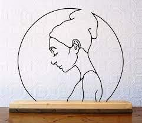

NESLİHAN ULUĞ
Hakkımda
Gelecekte Yenilenebilir Enerji Mühendisi olarak kariyerime devam etmek ve Enerji sektörüne Blockchain tabanlı çözümler geliştirmek için Enerji Sistemleri Mühendisliği okumaktayım. Bu doğrultuda T3 Girişim Merkezinden girişimcilik eğitimleri alıyor Yenilenebilir Enerji ile ilgili çalışmalarda bulunuyorum. Toplum gönüllüsü bireyler olarak sorumluluklarınızın farkında aktif duyarlı bir vatandaş olma yolunda kendimizi ve çevremizi geliştirmeyi hedefliyoruz. Şu anda kariyer ayrıştırıcı eğitimler alıyorum. Ekip çalışmasını önemsiyor,disiplin ve ciddiyeti kendimle özdeşleştiriyorum. İleride kurum içi girişimcilik yaparak kurumların gelişim ve değişim yolculuklarına liderlik etmeyi arzuluyorum
Profesyonelleşmek istediğim alanlar
- Yazılım
- Enerji
- Sanat
Enerji Sistemleri Mühendisliği olduğum ve enerji sektörüne olan ilgimden dolayı bu alanda proje geliştirmek istiyorum.
Sanata olan ilgimden dolayı da WireART olarak adlandırlıan tel bükme sanatına ilgim var.
Aynı zamanda Seramik Sanatına da merakım var.
Aşağıda bu sanat dallarına ait fotoğraflara ulaşabilirsiniz.
 

Sevdiğim kitaplar;
iletisim@neslihanulug.com